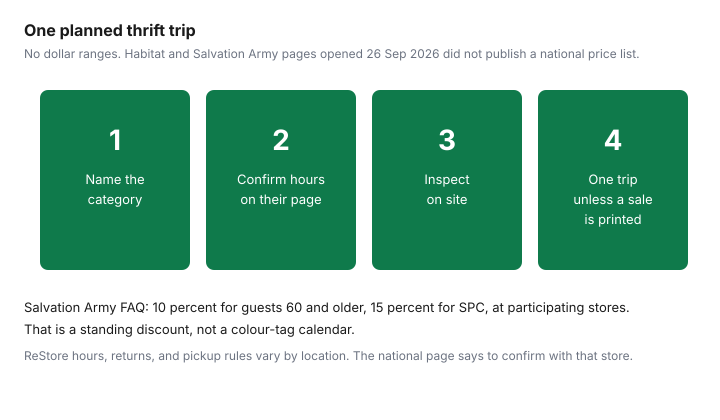

Household Items and Supplies · Canada
Habitat for Humanity ReStore and Thrift Stores for Household Items in Canada
A ReStore is a social enterprise, not a department store with a stable price list. Habitat’s page, opened 26 September 2026, says profits go to Habitat for Humanity organizations in Canada, that there are more than 100 locations, and that every location is different. This guide prints discount rules only where a chain’s own page printed them that day. It does not invent a sofa range.
What to leave on the shelf is the used-goods guide. Whether a used appliance is still the cheaper year is the repair-or-replace guide. Giving things away before a move, when a store will not take them, is the declutter guide.
Key takeaways
- Habitat’s ReStore page, opened 26 Sep 2026, says stores sell new and used furniture, appliances, decor, and building materials, always at a discount, and “often with little to no tax.” That tax line is their wording, not a ruling. Prices are not negotiated. Hours and returns vary by location.
- The same page says appliances are generally less than 10 years old and TVs and electronics less than 5. Kitchen-cabinet and appliance donations are described as eligible for charitable receipts. Free pickup is named for certain items, with kitchen cupboards as the example, and the FAQ says pickups are usually for very large donations.
- Salvation Army Thrift’s FAQ, same day, says 95 locations sell gift cards, offers 10 percent off for guests 60 and older and 15 percent for SPC members at participating stores, and does not accept furniture, mattresses, or residential pickup.
- No national colour-tag calendar was on that FAQ. A Value Village discount schedule was not on a rendered terms page opened here. No category price range was printed by Habitat.
- One planned trip beats a loop of stores that have not posted a sale. Confirm hours with the location.
What Habitat for Humanity ReStores sell (furniture, fixtures, flooring, appliances) and how pricing works
Habitat for Humanity Canada’s ReStore page says you can donate new and used furniture, appliances, decor, and home-improvement building materials, and shop “always at a discount and often with little to no tax.” The page says the first ReStore was opened in Winnipeg in 1991 by five volunteers, that there are over 100 in Canada, and more than 1,000 worldwide. A later FAQ on the same page says the stores sell furniture, housewares, and decor; home appliances generally less than 10 years old; TVs and electronics less than 5 years old; cabinetry; kitchen and bath fixtures; building materials in full boxes or sections; flooring and tile; lighting; and doors and windows. It says locations do not negotiate prices. Many locations will deliver for a fee. You confirm the fee, the hours, the payment methods, and the return rule with that store. The national page says those differ.
The page also says its national survey found that 80 percent of Canadians believe thrifting makes economic and environmental sense. The sample size and the survey date were not on the page. Treat 80 percent as Habitat’s sentence, not as an independent census. There is still no dollar range for a dresser or a fridge. A price you see on the tag that day is the price. A blog’s “usually $50” is not.
Canadian thrift chains (Value Village, Salvation Army Thrift, local charity shops) and discount days
Salvation Army Thrift’s FAQ, opened 26 September 2026, says The Salvation Army in Canada owns the stores, with many urban stores overseen by National Recycling Operations. It offers no tax on most items, with restrictions, and says to ask in store. It offers 10 percent off daily for guests aged 60 and older at participating locations, and 15 percent for Student Price Card members. Those discounts cannot be combined with other offers. It also names various in-store promotions and email offers. “Various” is not a weekday. This draft did not find a national colour-tag calendar on that FAQ, so it does not print a 50 percent colour day.
Gift cards are sold at all 95 locations named on that page. Clothing, footwear, and bedding and linens can be exchanged within 30 days at participating stores if the receipt and price tag are attached. Everything else, including Featured Finds, is final sale. A store credit on an exchange is a gift card. Featured Finds are not combined with promotions, and the store says it cannot verify authenticity. Electronics are tested by staff and you are still asked to test them. Value Village’s Super Savers page did not render a terms schedule this draft could quote, so no point value and no member-sale weekday is printed. A local charity shop is a third set of rules. Read the sign in that shop. Do not copy Salvation Army’s 10 percent onto it.
Best household finds by category, with typical Canadian price ranges
The useful split is what each place says it sells, not a national price band. Furniture, fixtures, flooring, and appliances are on Habitat’s list. Kitchenware and small appliances are on Salvation Army’s donor list. A “typical Canadian price” was not on either page. The table leaves the dollar column blank on purpose. If you need a number, it is the tag in front of you, dated the day you see it.
| Category | Where | What to check | Price range |
|---|---|---|---|
| Furniture | ReStore. Not Salvation Army Donor Welcome Centres, which refuse furniture and mattresses. | Frame, stains, pests. Confirm that store’s return rule. Delivery is a local fee if offered. | Not printed. |
| Fixtures, flooring, building materials | ReStore. Full boxes or sections, on Habitat’s list. | Whether the box is complete. Hours and pickup with that location. | Not printed. |
| Appliances | ReStore: generally under 10 years. Salvation Army: small appliances on the donor list; staff say they test electronics. | Model plate, power-on, and the repair-or-replace test. TVs and electronics at ReStore are described as under 5 years. | Not printed. |
| Kitchenware and housewares | ReStore housewares. Salvation Army housewares and small appliances. A Buy Nothing porch if you want it free. | Cracks, flaking coatings, recalls. Bedding and linens at Salvation Army can be exchanged within 30 days with receipt and tag. | Not printed. |
| Discount day | Salvation Army participating stores: 10 percent at 60 and older, 15 percent SPC, not combinable. | No colour-tag calendar on the FAQ. Value Village schedule not opened. | The percents above are discounts, not item prices. |
What to skip or inspect closely: upholstered pieces, cribs, and recalled items (Health Canada recalls)
Upholstery is where a low price hides a pest or a smell you cannot wash out. Sit on it in the light. Look at the seams. If you cannot inspect it, leave it. Cribs and car seats are not a thrift bargain. Search the product on recalls-rappels.canada.ca before you take it, and read the used-goods guide for the household list this site already walks through. This page does not restate older recall dates it did not re-open.
Salvation Army says Featured Finds may be exceptional and that you should make your own assessment because authenticity is not verified on the floor. A glass-cabinet object at a final-sale counter is a place to slow down. ReStore appliances still need the repair test. Age under 10 years, which is Habitat’s general line, is not a warranty.
Donating your own items: ReStore pickup and receipt basics
Habitat’s page says anyone can donate, that accepted goods are generally new and used furniture, appliances, decor, and building materials, and that what a given store takes can vary. It says donations of kitchen cabinets and appliances are eligible for charitable donation receipts. It says you benefit from free pickup for certain items, and it gives kitchen cupboards as the example. The FAQ then says pickups are usually available for very large donations and that you should contact the nearest location. Both sentences are on the page. The practical step is to call that ReStore before you hire a truck. The page does not print a Canada Revenue Agency fair-market-value threshold. Do not assume every bag of dishes produces a receipt.
Salvation Army is a different door. Donor Welcome Centres accept housewares and small appliances, among other goods listed on the FAQ, and donation bins are clothing and linens only. The FAQ says they cannot accept furniture or mattresses and cannot offer residential pickup. A donor coupon is 20 percent off the next purchase of $20 or more at participating locations. Tax receipts, on that FAQ, may cover multiple items if the combined fair market value is $500 or more and each item is at least $100, for jewelry, coins, collectibles, and other valuables. That is not a rule for a sofa, and it is not Habitat’s rule. The move guide is what to do with the rest. A Buy Nothing give is the free path when a store will not take the piece. IKEA’s own sell-back, for IKEA furniture only, is the sell-back guide.
A monthly thrift route plan that beats one-off trips
One trip with a category beats three trips because a flyer looked busy. Write the category first: a bookcase, a sheet pan, a bathroom faucet. Open that ReStore’s hours, because the national page says they vary. Open Salvation Army’s location page if the category is housewares or linens rather than furniture. Go in daylight, inspect, and leave if the tag is not the job you wrote down. A second trip is justified when that chain has printed a promotion you can still use, such as the senior or SPC discount if you qualify, or an in-store promotion the store has actually posted. It is not justified by a colour-tag rumour.
Stack the errand with something you were already doing in that neighbourhood. A thrift loop across the city for a spoon is the opposite of a budget. The kitchen guide prices the one new pan that guide could verify. If the thrift pan fails the visual check, that new price is the comparison, not a made-up thrift average.

Sources & date stamps
- Habitat for Humanity Canada, habitat.ca/en/restore, opened 26 Sep 2026. Social enterprise. More than 100 Canadian locations. First ReStore, Winnipeg, 1991. Discount wording, tax wording, appliance age lines, no price negotiation, local delivery fee, local returns, kitchen-cabinet and appliance receipt sentence, and pickup sentences as cited above. The 80 percent survey line did not include a sample size.
- Salvation Army Thrift Store FAQ, thriftstore.ca/frequently-asked-questions, opened 26 Sep 2026. Ownership, donation lists, no furniture or mattresses, no residential pickup, 20 percent donor coupon on $20 or more, receipt test of $500 combined and $100 per item for valuables, 30-day exchange on clothing, footwear, bedding and linens, 95 gift-card locations, 10 percent at age 60, 15 percent SPC, no tax on most items with restrictions, under 5 percent of textiles and household goods estimated to landfill.
- Value Village’s Super Savers terms did not render a schedule this draft could quote. No colour-tag calendar was printed from a Salvation Army page.
- Health Canada recall dates were not re-copied. Search recalls-rappels.canada.ca.
Frequently asked questions
What can I buy at a Habitat ReStore?
Habitat's ReStore page, opened 26 September 2026, says stores sell new and used furniture, appliances, decor, and building materials, including cabinetry, fixtures, flooring, lighting, doors, and windows. It says there are more than 100 locations in Canada and that every location is different. Hours, payment, delivery, and returns are local. The page says prices are not negotiated.
Are ReStore appliances worth buying?
The same page says home appliances are generally less than 10 years old, and TVs and electronics less than 5 years old. It does not print a price range or a test result. Plug the unit in at the store if they allow it, read the model plate, and decide with the repair-or-replace guide whether a used machine is still the cheaper year. Delivery, where offered, is a fee you confirm with that location.
Do Canadian thrift stores have discount days?
Salvation Army Thrift's FAQ, opened 26 September 2026, lists 10 percent off for guests 60 and older and 15 percent for Student Price Card members, at participating locations, plus various in-store promotions. It does not print a national colour-tag calendar. A Value Village discount-day schedule was not on a rendered terms page this draft opened, so none is printed here. Ask the store, or read that chain's own page.
What should I avoid buying secondhand?
Upholstery you cannot inspect for pests, a crib, and anything on a recall. The used-goods guide is the household checklist, and you should search the federal recall database for the product name before you pay. Salvation Army says staff test electronics and still asks you to test them yourself, and Featured Finds there are final sale because the store says it cannot verify authenticity.
Can I donate furniture to ReStore and get a receipt?
Habitat's page says donations of kitchen cabinets and appliances are eligible for charitable donation receipts, and that free pickup exists for certain items such as kitchen cupboards. It also says pickup is usually for very large donations and that you should confirm with the location. It does not print a CRA fair-market-value rule. Salvation Army's FAQ is a different charity: no furniture or mattresses, no residential pickup, and receipts only on the valuables test printed there.